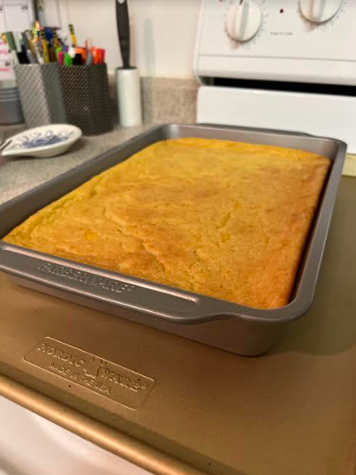

Corn Kugel(Casserole)

Description
Every year for as long as I can remember, my Aunt has made
this for Thanksgiving. It's basically a kosher corn casserole and
always a crowd pleaser.
Ingredients
- 1/2 cup margarine or oil
- 2 TBSP sugar
- 3 eggs
- 1/2 cup flour
- 1 cup unsweetened vanilla almond milk
- alternatively could use coffee rich or evaporated milk or regular milk with a teaspoon of vanilla
- 1 tsp baking powder
- 2 cans creamed corn
Steps
- Preheat oven to 350 F
- Melt margarine if using
- Add all ingredients EXCEPT corn to a bowl and mix until well combined
- Add corn to the mixture and stir until combined
- Pour into a greased pan
- Bake for 1 hour and 15 minutes
- Use a toothpick to check if it's done cooking (if it comes out clean, the dish is done)
- Enjoy at any temperature
Notes
- The finished dish should be slightly pulled away from the sides of the pan